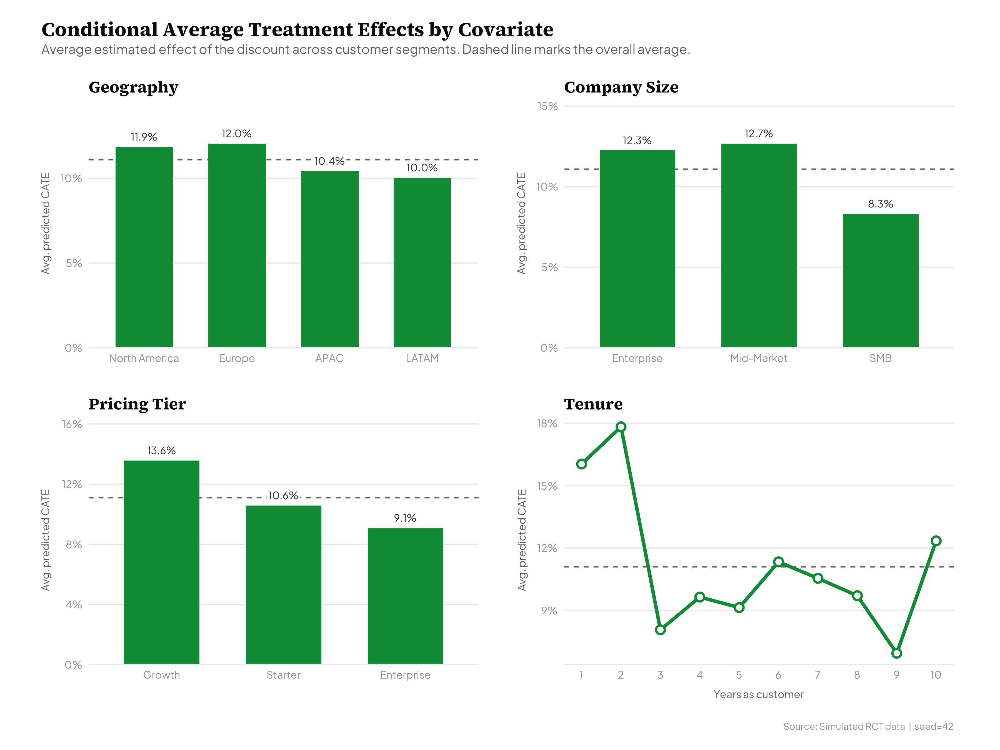
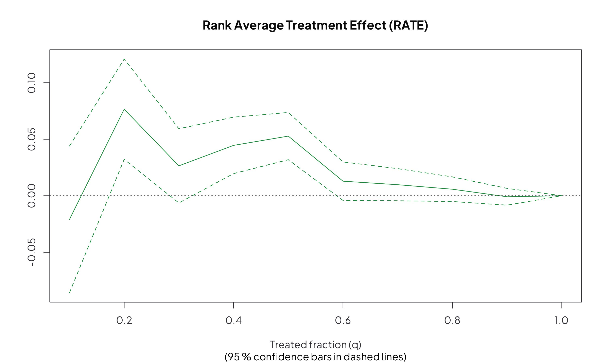

Causal Forests
An experiment - like an A/B test - tells you what a change does on average. That average is useful, but it hides the most important part: who it actually worked for.
Say you offer a discount to a random half of your customers and sign-ups go up. Underneath that one number, some customers were always going to buy and the discount just gave away margin, some were genuinely won over, and some didn't care at all. The average quietly blends all three together.
Causal forests pull those groups apart. Instead of a single overall number, they estimate how much each individual customer responds to the offer - so you can see where it really changes minds and where it doesn't.
That's worth real money. If you know who responds, you can aim the offer at the people it actually moves and stop spending it on everyone else. This project builds that tool and shows it works on a simulated experiment where the true answer is known in advance, so the estimates can be confirmed rather than just trusted.
A standard experiment estimates the Average Treatment Effect (ATE) - the mean difference in outcomes between the treated and control groups. It answers "does it work?" but collapses all variation into a single number.
Causal forests estimate Conditional Average Treatment Effects (CATEs) - the treatment effect as a function of covariates, τ(x) = E[Y(1) − Y(0) | X = x]. The implementation uses generalized random forests (GRF) with honest trees (2,000 trees, honesty fraction 0.5): one subsample chooses where to split and a disjoint subsample estimates the effect inside each leaf. That separation keeps the forest from overfitting the very patterns it is trying to measure.
It runs in simulation mode - a synthetic seat-discount RCT of 10,000 enterprise customers with known, heterogeneous true CATEs that vary by geography, company size, pricing tier, and tenure. Because ground truth is baked in, every estimate can be scored against the real answer; the forest itself only ever sees the simulated experiment.
Before trusting any estimate, the pipeline runs the standard GRF diagnostics: an overlap check that every unit could have landed in either arm, an IPW covariate-balance check, a calibration test of mean and differential prediction, and a RATE / AUTOC curve that measures the value of targeting by the model's ranking.
Results: mean calibration ≈ 1.0 (the ATE is well-calibrated), significant differential prediction (genuine heterogeneity, with the mild shrinkage forests are known for), and CATE-by-covariate breakdowns that recover the simulated structure.
What the model found

